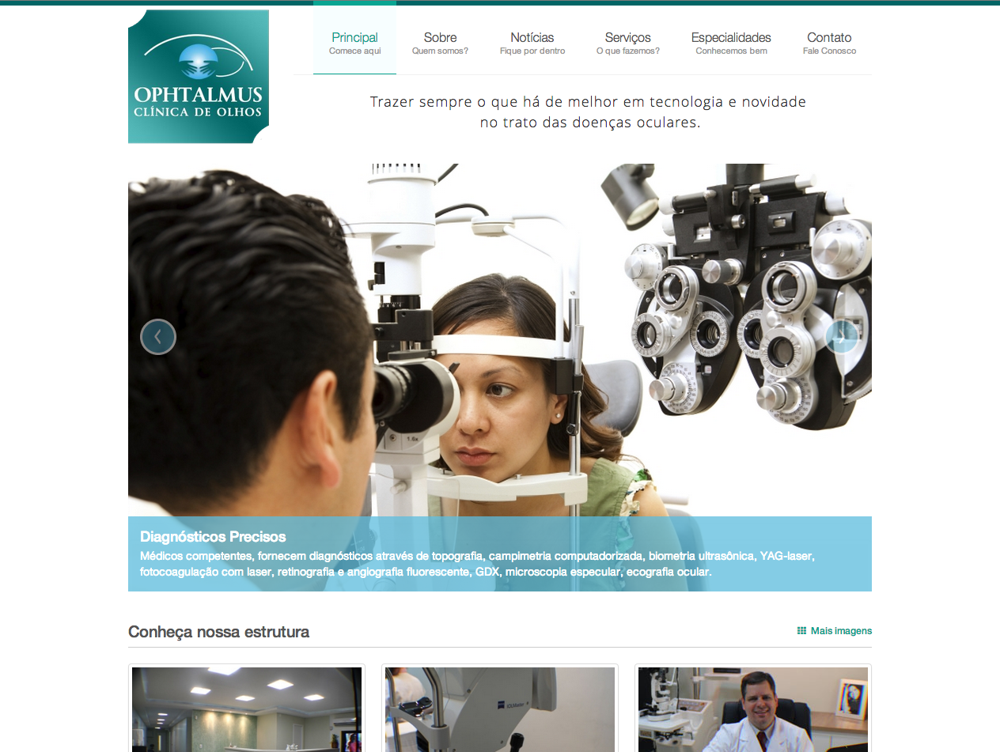
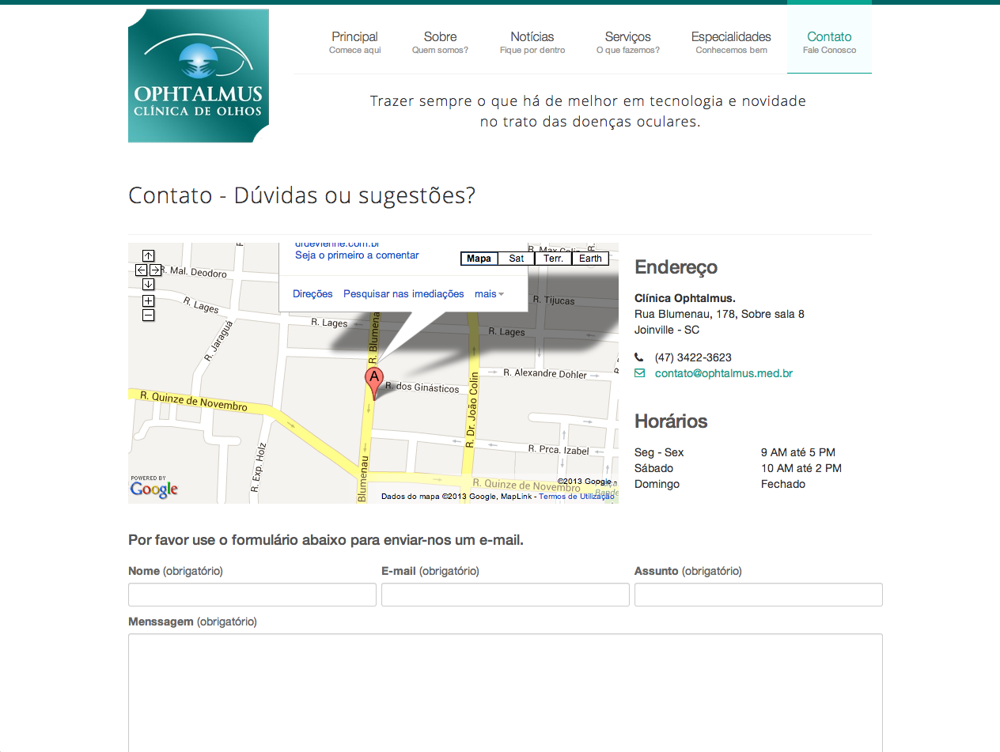

<div class="portfolio-single container">
		
    <div class="row">
    
        <div class="span8 portfolio-field portfolio-title">
            <h2>Ophtalmus Clinic</h2>
        </div>

        <div class="span4 portfolio-field portfolio-nav">
            <a class="icon button back" href="#/portfolio">close</a>
        </div>

        <div class="span8 portfolio-field">
            
            
        </div>

        <div class="span4 portfolio-field">
            
            <h3>Description</h3>
            
            <p>A institutional site created for a ophthalmologic clinic. This template was bought in bootstrap wrap, and customized with client colors and style. The template was adapted to a wordpress theme, and the administration panel customized to client, providing some entities to management.</p>
            
            <h3>Client</h3>
            
            <p><a href="http://ophtalmus.med.br/" target="_blank">Ophtalmus Clinic</a></p>
            
            <h3>Technology</h3>
            <ul class="tags">
                <li><a>HTML5/CSS3</a></li>
                <li><a>jQuery</a></li>
                <li><a>Responsive Design</a></li>
                <li><a>Wordpress</a></li>
            </ul>
            
            <div class="launch">
            	<a href="http://ophtalmus.med.br/" target="_blank" class="btn">LAUNCH PROJECT</a>
            </div>
            
        </div>
        
    </div>    
</div>